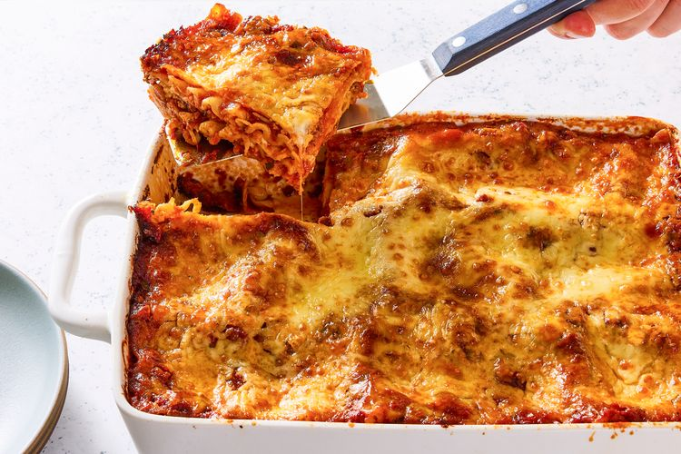

Lasagna

This classic lasagna recipe is made with an easy meat sauce as the base. Layer the sauce with noodles and cheese, then bake until bubbly! This is great for feeding a big family and freezes well, too.
Ingredients:
- 2 teaspoons extra virgin olive oil
- 1 pound ground beef chuck
- 1/2 medium onion, diced (about 3/4 cup)
- 1/2 large bell pepper (green, red, or yellow), diced (about 3/4 cup)
- 2 cloves garlic, minced
- 1 (28-ounce)can good-quality tomato sauce
- 3 ounces tomato paste (half a 6-ounce can)
- 1 (14 ounce) can crushed tomatoes
- 2 tablespoons chopped fresh oregano, or 2 teaspoons dried oregano
- 1/4 cup chopped fresh parsley (preferably flat leaf), packed
- 1 tablespoon Italian seasoning
- 1 pinch garlic powder and/or garlic salt
- 1 tablespoon red or white wine vinegar
- 1 tablespoon to 1/4 cup sugar (to taste, optional)
- Salt
- 1/2 pound dry lasagna noodles (requires 9 lasagna noodles - unbroken)
- 15 ounces ricotta cheese
- 1 1/2 pounds (24 ounces) mozzarella cheese, grated or sliced
- 1/4 pound (4 ounces) freshly grated Parmesan cheese
Steps:
- Put pasta water on to boil:
- Brown the ground beef:
- Cook the bell pepper, onions, and garlic; add back the beef:
- Make the sauce:
- Boil and drain the lasagna noodles:
- Preheat the oven to 375°F.
- Assemble the lasagna:
-
Bake:
Cover the lasagna pan with aluminum foil, tenting the foil slightly so it doesn't touch the noodles or sauce. Bake at 375°F for 45 minutes. If you'd like more of a crusty top or edges, uncover the lasagna in the last 10 minutes.
-
Cool and serve:
Allow the lasagna to cool for at least 15 minutes before serving. Leftovers will keep for about 5 days. You can reheat lasagna in a conventional oven or microwave. While storing, leave the aluminum tent on. (Try to keep the aluminum foil from touching the sauce.)